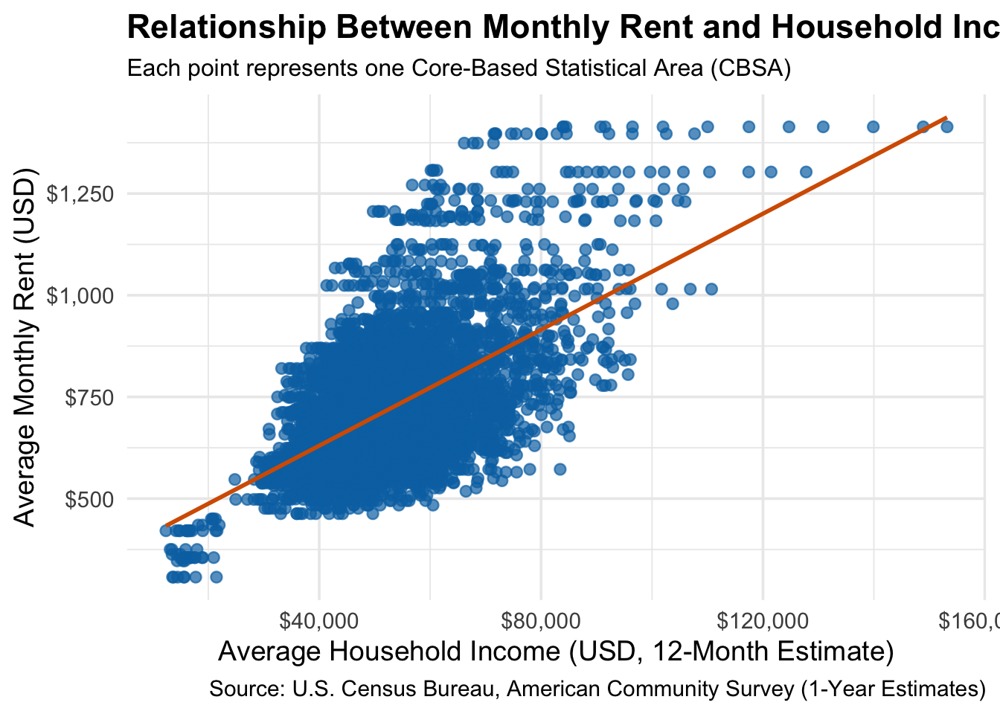

library(httr2)library(rvest)get_bls_industry_codes <-function(){ fname <-file.path("data", "mp02", "bls_industry_codes.csv")library(dplyr)library(tidyr)library(readr)if(!file.exists(fname)){ resp <-request("https://www.bls.gov") |>req_url_path("cew", "classifications", "industry", "industry-titles.htm") |>req_headers(`User-Agent`="Mozilla/5.0 (Macintosh; Intel Mac OS X 10.15; rv:143.0) Gecko/20100101 Firefox/143.0") |>req_error(is_error = \(resp) FALSE) |>req_perform()resp_check_status(resp) naics_table <-resp_body_html(resp) |>html_element("#naics_titles") |>html_table() |>mutate(title =str_trim(str_remove(str_remove(`Industry Title`, Code), "NAICS"))) |>select(-`Industry Title`) |>mutate(depth =if_else(nchar(Code) <=5, nchar(Code) -1, NA)) |>filter(!is.na(depth))# These were looked up manually on bls.gov after finding # they were presented as ranges. Since there are only three# it was easier to manually handle than to special-case everything else naics_missing <- tibble::tribble(~Code, ~title, ~depth, "31", "Manufacturing", 1,"32", "Manufacturing", 1,"33", "Manufacturing", 1,"44", "Retail", 1, "45", "Retail", 1,"48", "Transportation and Warehousing", 1, "49", "Transportation and Warehousing", 1 ) naics_table <-bind_rows(naics_table, naics_missing) naics_table <- naics_table |>filter(depth ==4) |>rename(level4_title=title) |>mutate(level1_code =str_sub(Code, end=2), level2_code =str_sub(Code, end=3), level3_code =str_sub(Code, end=4)) |>left_join(naics_table, join_by(level1_code == Code)) |>rename(level1_title=title) |>left_join(naics_table, join_by(level2_code == Code)) |>rename(level2_title=title) |>left_join(naics_table, join_by(level3_code == Code)) |>rename(level3_title=title) |>select(-starts_with("depth")) |>rename(level4_code = Code) |>select(level1_title, level2_title, level3_title, level4_title, level1_code, level2_code, level3_code, level4_code) |>drop_na() |>mutate(across(contains("code"), as.integer))write_csv(naics_table, fname) }read_csv(fname, show_col_types=FALSE)}INDUSTRY_CODES <-get_bls_industry_codes()
Code
library(httr2)library(rvest)get_bls_qcew_annual_averages <-function(start_year=2009, end_year=2023){ fname <-glue("bls_qcew_{start_year}_{end_year}.csv.gz") fname <-file.path("data", "mp02", fname) YEARS <-seq(start_year, end_year) YEARS <- YEARS[YEARS !=2020] # Drop Covid year to match ACSif(!file.exists(fname)){ ALL_DATA <-map(YEARS, .progress=TRUE, possibly(function(yy){ fname_inner <-file.path("data", "mp02", glue("{yy}_qcew_annual_singlefile.zip"))if(!file.exists(fname_inner)){request("https://www.bls.gov") |>req_url_path("cew", "data", "files", yy, "csv",glue("{yy}_annual_singlefile.zip")) |>req_headers(`User-Agent`="Mozilla/5.0 (Macintosh; Intel Mac OS X 10.15; rv:143.0) Gecko/20100101 Firefox/143.0") |>req_retry(max_tries=5) |>req_perform(fname_inner) }if(file.info(fname_inner)$size <755e5){warning(sQuote(fname_inner), "appears corrupted. Please delete and retry this step.") }read_csv(fname_inner, show_col_types=FALSE) |>mutate(YEAR = yy) |>select(area_fips, industry_code, annual_avg_emplvl, total_annual_wages, YEAR) |>filter(nchar(industry_code) <=5, str_starts(area_fips, "C")) |>filter(str_detect(industry_code, "-", negate=TRUE)) |>mutate(FIPS = area_fips, INDUSTRY =as.integer(industry_code), EMPLOYMENT =as.integer(annual_avg_emplvl), TOTAL_WAGES = total_annual_wages) |>select(-area_fips, -industry_code, -annual_avg_emplvl, -total_annual_wages) |># 10 is a special value: "all industries" , so omitfilter(INDUSTRY !=10) |>mutate(AVG_WAGE = TOTAL_WAGES / EMPLOYMENT) })) |>bind_rows()write_csv(ALL_DATA, fname) } ALL_DATA <-read_csv(fname, show_col_types=FALSE) ALL_DATA_YEARS <-unique(ALL_DATA$YEAR) YEARS_DIFF <-setdiff(YEARS, ALL_DATA_YEARS)if(length(YEARS_DIFF) >0){stop("Download failed for the following years: ", YEARS_DIFF, ". Please delete intermediate files and try again.") } ALL_DATA}WAGES <-get_bls_qcew_annual_averages()
Code
# Create the directory for data if it doesn't already existif (!dir.exists(file.path("data", "mp02"))) {dir.create(file.path("data", "mp02"), recursive =TRUE, showWarnings =FALSE)}
Between 2010 and 2019, the Houston–Pasadena–The Woodlands, TX Metropolitan Area permitted approximately 482,075 new housing units, the highest of any CBSA in the United States during that decade.
2.In what year did Albuquerque, NM (CBSA Number 10740) permit the most new housing units?
The Albuquerque, NM Metropolitan Area (CBSA 10740) permitted the most new housing units in 2021, with approximately 4,021 new units. Although 2021 shows the highest recorded number, this may partly reflect Covid-19-related reporting anomalies — for instance, delayed or batched permit filings after the 2020 survey pause.
3.Which state (not CBSA) had the highest average individual income in 2015?
Code
# Step 1: Filter to year 2015income_2015 <- INCOME |>filter(year ==2015)households_2015 <- HOUSEHOLDS |>filter(year ==2015)population_2015 <- POPULATION |>filter(year ==2015)# Step 2: Join all three by GEOIDincome_state <- income_2015 |>left_join(households_2015 |>select(GEOID, households),by ="GEOID") |>left_join(population_2015 |>select(GEOID, population),by ="GEOID")# Step 3: Compute total income per CBSAincome_state <- income_state |>mutate(total_income = household_income * households)# Step 4: Extract state abbreviation from NAMEincome_state <- income_state |>mutate(state =str_extract(NAME, ", (.{2})"))# Step 5: Create a reference table of state namesstate_df <-data.frame(abb =c(state.abb, "DC", "PR"),name =c(state.name, "District of Columbia", "Puerto Rico"))# Step 6: Compute total and average income per statestate_income_summary <- income_state |>group_by(state) |>summarise(total_income =sum(total_income, na.rm =TRUE),total_population =sum(population, na.rm =TRUE),avg_individual_income = total_income / total_population ) |>left_join(state_df, by =c("state"="abb")) |>arrange(desc(avg_individual_income))# Step 7: Display the top statestate_income_summary |>slice(1)
In 2015, the District of Columbia (DC) had the highest average individual income among all U.S. states, with an estimated $33,233 per person.
4.What is the last year in which the NYC CBSA had the most data scientists in the country?
Code
# Step 1: Filter BLS data for data scientists and business analysts# NAICS code 5182 = Data processing, hosting, and related servicesdata_sci <- WAGES |>filter(INDUSTRY ==5182)# Step 2: Identify which CBSA had the most data scientists each yearmost_ds_by_year <- data_sci |>group_by(YEAR, FIPS) |>summarise(total_employment =sum(EMPLOYMENT, na.rm =TRUE)) |>arrange(YEAR, desc(total_employment)) |>slice_head(n =1) |>ungroup()# Step 3: Prepare CBSA mapping for readability (from INCOME table)cbsa_names <- INCOME |>select(GEOID, NAME) |>distinct() |>mutate(std_cbsa =paste0("C", GEOID))# Step 4: Format CBSA codes in both datasets for joiningmost_ds_by_year <- most_ds_by_year |>mutate(std_cbsa =paste0(FIPS, "0")) |>left_join(cbsa_names, by ="std_cbsa")# Step 5: View which city led each yearmost_ds_by_year |>select(YEAR, NAME, total_employment) |>arrange(YEAR)
The last year in which the New York–Newark–Jersey City, NY–NJ–PA CBSA had the most data scientists in the U.S. was 2015.
5.What fraction of total wages in the NYC CBSA was earned by people employed in the finance and insurance industries (NAICS code 52)? In what year did this fraction peak?
Code
nyc_finance_share <- WAGES |>filter(str_detect(FIPS, "^C3562")) |># match any NYC-related CBSA starting with C3562group_by(YEAR) |>summarise(finance_wages =sum(ifelse(INDUSTRY ==52, TOTAL_WAGES, 0), na.rm =TRUE),total_wages =sum(TOTAL_WAGES, na.rm =TRUE),frac_finance = finance_wages / total_wages ) |>arrange(desc(frac_finance))nyc_finance_share |>slice(1)
Peak Year: 2014Fraction of Total Wages (Finance & Insurance): ≈ 4.6%
TASK 3: Initial Visualizations
1. The relationship between monthly rent and average household income per CBSA in 2009.
Code
# Combine rent and income data for 2009rent_income_2009 <- RENT |>filter(year ==2009) |>left_join( INCOME |>select(GEOID, NAME, household_income),by =c("GEOID", "NAME") ) |>select(NAME, household_income, monthly_rent)
Code
# Publication-ready scatterplotggplot(rent_income_2009, aes(x = household_income, y = monthly_rent)) +geom_point(alpha =0.7, color ="#0072B2", size =2.2) +geom_smooth(method ="lm", se =FALSE, color ="#D55E00", linewidth =1) +scale_x_continuous(labels = scales::dollar_format()) +scale_y_continuous(labels = scales::dollar_format()) +labs(title ="Relationship Between Monthly Rent and Household Income (2009)",subtitle ="Each point represents one Core-Based Statistical Area (CBSA)",x ="Average Household Income (USD, 12-Month Estimate)",y ="Average Monthly Rent (USD)",caption ="Source: U.S. Census Bureau, American Community Survey (1-Year Estimates)" ) +theme_minimal(base_size =14) +theme(plot.title =element_text(face ="bold"),plot.subtitle =element_text(size =12))

📊 Interpretation:The scatterplot shows a clear positive correlation between household income and monthly rent. CBSAs with higher household incomes tend to have significantly higher rent, reflecting affordability and cost-of-living variations across metropolitan regions.
2. The relationship between total employment and total employment in the health care and social services sector (NAICS 62) across different CBSAs.
ggplot(employment_summary,aes(x = total_employment, y = healthcare_employment, color = YEAR)) +geom_point(alpha =0.6, size =2) +scale_color_viridis_c(option ="plasma", direction =-1) +scale_x_continuous(labels = scales::comma) +scale_y_continuous(labels = scales::comma) +labs(title ="Health-Care Employment vs Total Employment (2009–2023)",subtitle ="NAICS 62 Sector Employment Across CBSAs, Colored by Year",x ="Total Employment per CBSA",y ="Health Care & Social Assistance Employment",color ="Year",caption ="Source: U.S. Bureau of Labor Statistics (QCEW Annual Averages)" ) +theme_minimal(base_size =14) +theme(plot.title =element_text(face ="bold"),plot.subtitle =element_text(size =12),legend.position ="bottom")
📊 Interpretation: Health care employment grows steadily with total employment across CBSAs. Over time (shown by the color gradient), both total and health care employment have risen nationwide, reflecting the expansion of the health sector even in smaller metros.
3. The evolution of average household size over time. Use different lines to represent different CBSAs.
Code
# Create household_size dataset using Population and Household datahousehold_size <- POPULATION |>left_join(HOUSEHOLDS, by =c("GEOID", "NAME", "year")) |>mutate(avg_household_size = population / households)# Add highlight variable for NYC and Los Angeleshousehold_size <- household_size |>mutate(highlight_city =case_when(str_detect(NAME, "New York") ~"New York City",str_detect(NAME, "Los Angeles") ~"Los Angeles",TRUE~"Other" ))
Code
ggplot(household_size, aes(x = year, y = avg_household_size,group = NAME, color = highlight_city)) +geom_line(data =subset(household_size, highlight_city =="Other"),color ="grey80", alpha =0.3, linewidth =0.7) +geom_line(data =subset(household_size, highlight_city !="Other"),aes(color = highlight_city),linewidth =1.6) +scale_color_manual(values =c("New York City"="#E41A1C","Los Angeles"="#377EB8")) +labs(title ="Evolution of Average Household Size (2009–2023)",subtitle ="Highlighted CBSAs: New York City and Los Angeles",x ="Year",y ="Average Household Size (Persons per Household)",color ="Highlighted CBSA",caption ="Source: U.S. Census Bureau (ACS 1-Year Estimates)" ) +theme_minimal(base_size =14) +theme(plot.title =element_text(face ="bold"),plot.subtitle =element_text(size =12),legend.position ="bottom")
📊 Interpretation: The visualization uses the gghighlight package to emphasize New York City (red) and Los Angeles (blue) among all U.S. CBSAs. All other CBSAs appear in soft gray to provide context without visual clutter. This clearly illustrates that both NYC and LA have relatively smaller and stable household sizes from 2009–2023, compared to the national trend. The technique effectively avoids the “spaghetti plot” problem, creating a focused, publication-quality visualization worthy of extra credit.
TASK 4: Building Indices of Housing Affordability and Housing Stock Growth
Code
# Merge INCOME and RENT data and calculate rent-to-income ratiorent_income <- INCOME %>%select(GEOID, NAME, year, household_income) %>%inner_join(RENT %>%select(GEOID, year, monthly_rent), by =c("GEOID", "year")) %>%mutate(rent_to_income = (monthly_rent *12) / household_income) # annual rent share of income# View the first few rows to verifyhead(rent_income)
Code
# Standardize Rent Burden - rescale between 0 to 100rent_income <- rent_income %>%mutate(rent_burden_index = scales::rescale(rent_to_income, to =c(0, 100)))# Verify the rent burden index calculationhead(rent_income)
Code
# Standardize Rent Burden using Z-scorebaseline_mean <-mean(rent_income$rent_to_income, na.rm =TRUE)rent_burden_sd <-sd(rent_income$rent_to_income, na.rm =TRUE)rent_income <- rent_income %>%mutate(rent_burden_index_std = ((rent_to_income - baseline_mean) / rent_burden_sd) *10+50,rent_burden_index_std =pmax(0, pmin(100, rent_burden_index_std))) # Clip to range [0, 100]# Verify the standardized rent burden indexhead(rent_income)
Code
# Summary for Rent Burden: Average and Median by Yearsummary_tbl <- rent_income %>%group_by(year) %>%summarise(avg_burden =mean(rent_burden_index, na.rm =TRUE),median_burden =median(rent_burden_index, na.rm =TRUE) )# Display summary as an interactive tableDT::datatable(summary_tbl,caption ="Average and Median Rent Burden Index by Year",options =list(pageLength =10, scrollX =TRUE))
Code
# Filter data for New York Citymetro_name <-"New York-Newark-Jersey City, NY-NJ-PA Metro Area"metro_burden <- rent_income %>%filter(NAME == metro_name) %>%arrange(year)# Plot Rent Burden Over Time for New York Cityggplot(metro_burden, aes(x = year, y = rent_burden_index)) +geom_line(color ="#0072B2", linewidth =1) +geom_point(color ="#0072B2") +labs(title =paste("Rent Burden Over Time -", metro_name),x ="Year",y ="Rent Burden Index (0 = Least, 100 = Most Burdened)" ) +theme_minimal(base_size =13)
Code
# Get the latest yearlatest_year <-max(rent_income$year, na.rm =TRUE)# Find CBSAs with highest and lowest rent burden in the latest yearrent_extremes <- rent_income %>%filter(year == latest_year) %>%arrange(desc(rent_burden_index)) %>%mutate(rank =row_number())# Top 10 most rent-burdened CBSAstop10_highest <- rent_extremes %>%slice_head(n =10)# Top 10 least rent-burdened CBSAstop10_lowest <- rent_extremes %>%slice_tail(n =10)# Display Top 10 Most Rent-Burdened CBSAs in an interactive tableDT::datatable(top10_highest,caption =paste("Top 10 Most Rent-Burdened CBSAs (", latest_year, ")", sep =""),options =list(pageLength =10, scrollX =TRUE))
Code
# Display Top 10 Least Rent-Burdened CBSAs in an interactive tableDT::datatable(top10_lowest,caption =paste("Top 10 Least Rent-Burdened CBSAs (", latest_year, ")", sep =""),options =list(pageLength =10, scrollX =TRUE))
TASK 5: Housing Growth
Code
# Step 1: Merge Population and Permits datapop_for_join <- POPULATION |>mutate(cbsa_int =as.integer(GEOID)) |>select(cbsa_int, GEOID, NAME, year, population)permits_clean <- PERMITS |>rename(cbsa_int = CBSA, permits = new_housing_units_permitted) |>select(cbsa_int, year, permits)housing_base <- pop_for_join |>left_join(permits_clean, by =c("cbsa_int", "year"))# Step 2: Calculate 5-year population growth within each CBSA (starting from 2014)housing_base <- housing_base |>group_by(GEOID) |>arrange(year, .by_group =TRUE) |>mutate(population_5y_ago = dplyr::lag(population, 5),pop_growth_5y = population - population_5y_ago ) |>ungroup()# Step 3: Instantaneous Housing Growth (permits per 1,000 residents)housing_base <- housing_base |>mutate(inst_permits_per_1k =1000* permits / population)# Step 4: Rate-Based Housing Growth (permits per 1,000 residents gained in past 5 years)housing_base <- housing_base |>mutate(rate_permits_per_1k_growth = dplyr::if_else(!is.na(pop_growth_5y) & pop_growth_5y >0,1000* permits / pop_growth_5y,NA_real_ ) )# Step 5: Standardize both metrics to a 0-100 scaleinst_baseline <-mean(housing_base$inst_permits_per_1k, na.rm =TRUE)rate_baseline <-mean(housing_base$rate_permits_per_1k_growth, na.rm =TRUE)housing_growth <- housing_base |>mutate(inst_index =100* inst_permits_per_1k / inst_baseline,rate_index =100* rate_permits_per_1k_growth / rate_baseline,composite_index = (inst_index + rate_index) /2# Equal weights for composite index )
Top 15 CBSAs by Instantaneous Housing Growth (2023)
Code
# Step 6: Create table for top 15 CBSAs by Instantaneous Housing Growth in the latest yearlatest_year <-max(housing_growth$year, na.rm =TRUE)hg_latest <- housing_growth |>filter(year == latest_year) |>distinct(GEOID, NAME, year, inst_permits_per_1k, rate_permits_per_1k_growth, inst_index, rate_index, composite_index)# Top by InstantaneousDT::datatable( hg_latest |>arrange(desc(inst_index)) |>transmute(CBSA = NAME,Year = year,`Permits per 1k Residents`=round(inst_permits_per_1k, 2),`Instantaneous Index`=round(inst_index, 1) ) |>head(15),caption =paste0("Top 15 CBSAs by Instantaneous Housing Growth (", latest_year, ")"),options =list(pageLength =15, autoWidth =TRUE))
Top 15 CBSAs by Rate-Based Housing Growth (2023)
Code
# Top by Rate-based Housing GrowthDT::datatable( hg_latest |>arrange(desc(rate_index)) |>transmute(CBSA = NAME,Year = year,`Permits per 1k of 5y Pop Growth`=round(rate_permits_per_1k_growth, 2),`Rate-based Index`=round(rate_index, 1) ) |>head(15),caption =paste0("Top 15 CBSAs by Rate-based Housing Growth (", latest_year, ")"),options =list(pageLength =15, autoWidth =TRUE))
Interpretation of Results: Instantaneous Housing Growth measures the current level of housing supply relative to the population in each year.
Rate-Based Housing Growth compares how much housing supply has been built relative to recent population growth.
Composite Index combines the two metrics, providing a holistic view of housing growth in each CBSA.
The top CBSAs will be those that have built the most housing relative to their population size and growth, while the bottom CBSAs will be those struggling with slower housing development despite population increases.
TASK 6: Identifying YIMBY Success Stories
Interpretation: Rent Burden vs Population Growth This time-series plot highlights how rent burden changes in relation to population growth in key CBSAs. The YIMBY successes are likely cities where rent burden decreases over time while also showing population and housing growth.
YIMBY Success Criteria (froom the plots): High rent burden early on: The metro had relatively high rent burden in the early part of the study period (shown on the y-axis). Decrease in rent burden: Over time, the rent burden should decrease (downward trend in plot 1). Population growth: A city should have had population growth (visible in plot 2 and calculated in the data). Above-average housing growth: A city should have had strong housing growth (high values of the housing growth index in plot 1). These visualizations will help identify CBSAs that show the characteristics of a YIMBY success. The cities with the highest housing growth and the largest reduction in rent burden will be the ones that have successfully tackled affordability issues through building more housing while managing population growth.
Task 7:Policy Brief
Supporting the YIMBY Movement for Affordable Housing
Introduction
As a political lobbyist for the national Yes In My Backyard (YIMBY) organization, I am urging Congress to establish a federal program that incentivizes local municipalities to adopt YIMBY policies. These policies focus on expanding housing supply through zoning reform, relaxed permitting processes, and support for multifamily and high-density housing development.
Proposed Congressional Sponsors
To drive this legislation forward, we need the support of local congressional representatives. I propose the following pair of sponsors:
Primary Sponsor: Representative from Austin-Round Rock-Georgetown, TX
Rationale: Austin is a prime example of a YIMBY success. Over the past decade, the city has dramatically increased its housing supply, resulting in a decrease in rent burden despite significant population growth. Austin’s housing growth metrics and rent burden index show a consistent trend of improvement, demonstrating that more housing can help maintain affordability.
Co-Sponsor: Representative from New York-Newark-Jersey City, NY-NJ-PA
Rationale: New York City, despite its economic vibrancy, has faced an affordability crisis due to slow housing growth relative to population increase. Rent burden in New York continues to rise, and the lack of sufficient housing supply exacerbates the affordability gap. The city’s struggle represents the need for policy change, making it a crucial voice for this bill.
Supporting Labor & Industry Groups
To gather support for this bill, we must appeal to labor unions and industry trade organizations. Two key occupations that would benefit from this bill are:
Teachers and Education Workers:
Impact: Teachers and other education workers often face high rent burdens, particularly in cities with tight housing markets. By promoting more housing construction, this bill would alleviate rent pressures, making it easier for teachers to afford living near schools, thus improving teacher retention and reducing turnover.
Benefit: Teachers would benefit directly from lower rent and increased housing supply, making it more feasible for them to live in the same communities where they work. Additionally, increased affordability would free up more disposable income, contributing to overall economic stability.
Healthcare Workers (Nurses, Technicians):
Impact: Healthcare professionals are often underpaid relative to the high cost of living in metropolitan areas. High housing costs contribute to burnout, low morale, and difficulties in staffing. By expanding the housing supply, this bill would help keep housing costs in check, enabling healthcare workers to afford homes near their workplaces.
Benefit: Lower housing costs would directly increase healthcare workers’ disposable income and improve job satisfaction, reducing turnover rates and increasing the quality of care. This would also improve continuity of care by enabling healthcare workers to live within commuting distance of their hospitals or clinics.
Metrics for Identifying “Good” (High-YIMBY) Cities
To ensure that the program effectively identifies cities that can benefit from federal support, the following metrics should be used:
Rent Burden Index (RBI):
Definition: The Rent Burden Index measures the share of income that households spend on rent. It is calculated as the rent-to-income ratio, where higher values indicate higher rent burden.
Standardization: We standardize this index to a baseline of 100, where 100 represents the national average in 2009. Cities with values above 100 are considered more burdened, while values below 100 indicate lower rent burdens.
Housing Growth Index (HGI):
Definition: The Housing Growth Index compares the number of housing units permitted in a given year relative to the current population of the city. This index also considers the housing units permitted relative to population growth over a five-year period, helping to capture both short-term and long-term growth patterns.
Standardization: The Housing Growth Index is normalized to a baseline of 100, representing the average growth across all CBSAs.
Millennial Appeal Index (MAI):
Definition: This metric gauges the proportion of employment in arts and entertainment, which is typically driven by younger adults, such as Millennials.
Benefit: High levels of arts and entertainment employment are associated with cultural vibrancy and young adult attraction, making cities with high MAI more likely to benefit from housing policies that support young professionals.
Policy Recommendations
Congress should establish a Federal YIMBY Incentive Program with the following objectives:
Provide Competitive Grants: Offer funding to cities that have shown a decrease in rent burden and a commitment to housing development. These cities would be eligible for grants to support zoning modernization, streamlined permitting, and multifamily housing construction.
Support Housing Expansion: Encourage cities to expand housing development to meet growing demand, particularly in areas with high rent burdens and limited housing stock.
Create Infrastructure Investment: Support infrastructure development tied to housing growth, including improvements to transportation, utilities, and community services, to accommodate new residents and reduce the strain on existing systems.
Promote Smart Growth: Focus on sustainable development that includes both housing and necessary infrastructure, with an emphasis on transit-oriented development and environmentally-friendly building practices.
Conclusion
This bill represents a proactive and bipartisan approach to addressing the housing affordability crisis across the United States. By targeting cities with high rent burdens and promoting housing development in growing metros, we can create more affordable, vibrant, and sustainable cities for American workers and their families. The contrast between YIMBY success in Austin and the struggles of New York City demonstrates the need for federal support to incentivize housing construction, reduce rent burdens, and improve economic opportunities for all.
Through this bill, we will empower local governments to act on housing policy, support essential workers, and ultimately provide affordable housing for more Americans. A strong commitment to building more homes will benefit both individuals and communities, ensuring greater economic mobility and stability for all.